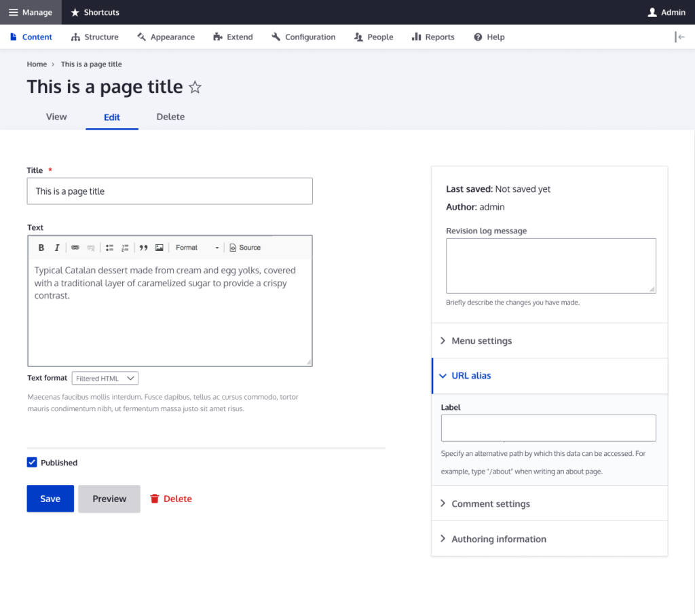
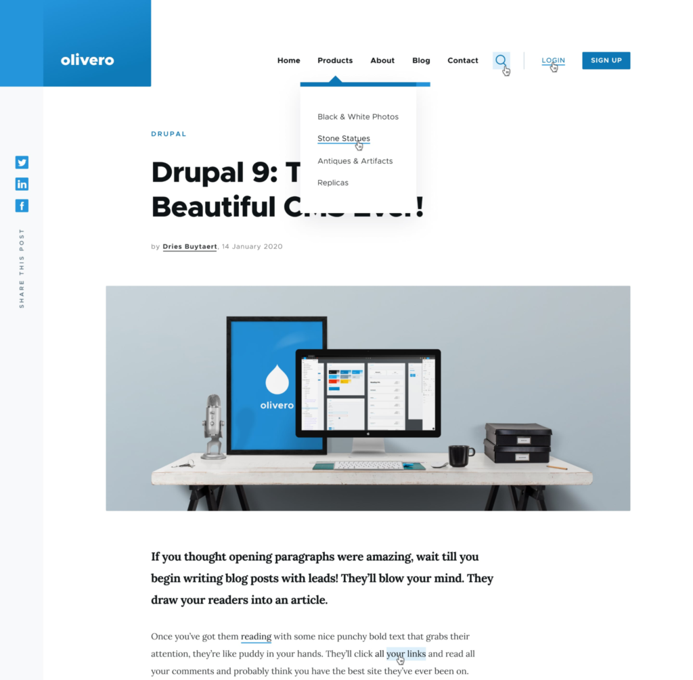
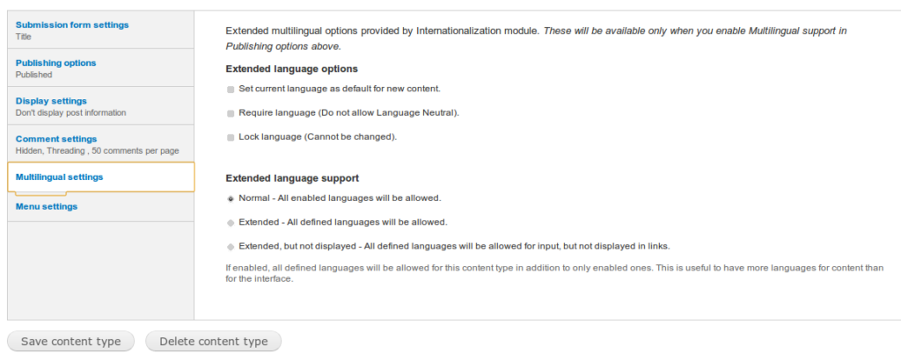

What's New in Drupal 10
Drupal 10 is a significant release that introduces several new and improved features, making it an even more user-friendly platform for both experienced developers and those just starting with it. Here are some of the key highlights:
New and Improved User Interfaces
-
Claro Administration Theme: Drupal 10 introduces Claro, a modern and user-friendly administration theme designed to provide a visually appealing and intuitive experience for managing your Drupal website. It features accessibility in mind, making it easier for users with disabilities to navigate the interface. Additionally, Claro aligns with the Olivero default theme, offering a consistent look and feel across the front-end and back-end.

-
Olivero Default Theme: Olivero is a new fully responsive and accessible default theme that provides a clean, fast-loading, and lightweight foundation for customizing your website. It adheres to the highest accessibility standards and delivers an optimal viewing experience on various devices.

Enhanced Development Tools
-
Theme Starterkit: The Theme Starterkit streamlines the creation of custom themes by providing tools and templates. It supports Sass, a popular CSS preprocessor, and prioritizes accessibility, offering templates and tools that make it easier to create user-friendly themes.
Improved Multilingual Support
-
Language Type Entity: Drupal 10 introduces the language type entity, enabling the creation and direct management of new languages within the administrative interface. It also features improved language detection mechanisms and a more flexible language switcher for users to navigate between languages.

Advanced Security Features
-
Stronger Password Policies: Drupal 10 enforces stricter password requirements by default, along with better security measures for third-party modules to address potential vulnerabilities. Regular security updates are also provided to keep websites secure.
Performance and Scalability Enhancements
-
Improved Caching Mechanisms: Drupal 10 offers better caching mechanisms to speed up website performance, particularly beneficial for high-traffic sites.
-
Efficient Content Delivery: Optimized content delivery mechanisms ensure content is delivered to users quickly and reliably.
-
Database Performance Optimization: Enhanced database performance reduces the load on the database server.
Content Management Refinements
-
Intuitive Content Authoring: Drupal 10 provides a more user-friendly content authoring experience for content editors, including improved tools for content migration.
-
Better Media Management: Integrated media tools and an improved media library streamline media management tasks.
-
Enhanced Content Preview: A refined content preview mechanism allows users to visualize changes before publishing.
Powerful Editing Experience
Enhanced Collaboration Features
-
Real-time Collaboration: Drupal 10 introduces features that allow multiple users to work on content simultaneously, including tracking changes, reviewing and approving content, and managing workflows.
Deprecations and Changes
-
Decoupled Menus: Decoupled menus separate the menu presentation layer from the back-end management, enabling greater flexibility and improved front-end performance. To implement them, you'll need a decoupled menu module or a custom solution using Drupal's menu management API.
-
Removed Deprecated Code: Drupal 10 eliminates old, unused code to enhance performance, stability, and security, simplifying maintenance and updates for developers.
-
Removed Core Modules: Some core modules with limited use cases or replaceable functionalities have been removed to streamline the platform and improve performance. These include Overlay, Workspaces, and PHP Filter modules.
Upgrading to Drupal 10
Upgrading to Drupal 10 requires careful planning, preparation, testing, and optimization. However, the benefits, including improved performance, security, and content management tools, make it worthwhile. Here's a brief overview of the process:
-
Planning: Carefully plan the upgrade, considering modules, themes, content migration strategies, and potential site modifications.
-
Website Backup: Create a complete backup of your website, including content, files, and databases, as a safety measure.
-
Module and Theme Upgrades: Ensure all modules and themes are compatible with Drupal 10 and upgrade them if necessary.
-
Drupal Core Upgrade: Upgrade Drupal to version 10 using the built-in update mechanism or manual codebase updates.
-
Performance Testing: Test your website thoroughly after the upgrade to ensure everything functions as expected and content integrity.
-
Performance Optimization: Optimize your site's performance by ensuring proper configuration and enabling performance-related modules.
Cloudways and Drupal 10
Cloudways offers a robust hosting platform optimized for Drupal websites, providing the resources and support you need to build, maintain, and manage high-performance, secure, and user-friendly Drupal 10 websites. Here are some key benefits:
-
Optimized Performance: Cloudways ensures fast load times and top-notch performance through its optimized hosting environment.
-
Easy Deployment: Deploying a Drupal website is effortless with Cloudways' user-friendly platform.
-
High-Level Security: Cloudways prioritizes website security with firewalls, managed backups, and real-time security monitoring.
-
24/7 Expert Support: Cloudways provides round-the-clock expert support via live chat, email, and ticketing systems to address any issues.
-
Customizable Server: Tailor your server to your specific Drupal website needs by choosing a data center location and selecting server resources.
How to Deploy Drupal 10 on Cloudways
Here's a quick guide to deploying Drupal 10 on Cloudways:
-
Launch a New Server: Sign up for Cloudways, choose DigitalOcean as your IaaS provider, select your server size and location, and launch a new server with a Custom PHP Application.
-
Launch SSH Terminal: Access the server's SSH terminal to navigate to the public_html folder and download the Drupal framework using the
composer create-project drupal/recommended-project drupal-10 command.
-
Install Drupal 10: Execute the following command in the terminal to install Drupal automatically, including libraries and dependencies:
composer create-project drupal/recommended-project drupal-10
-
Setup Details: Access the Drupal installer by adding
/drupal-10/web/core/install.php to your server's URL. Configure your desired profile and proceed with the installation.
-
Database Details: Access your Cloudways platform, navigate to your application, and click Access Details under Application Management to obtain database access details. Use the
cp command to copy the default.settings.php file and rename it to settings.php. Enter your database details into the Drupal setup and continue.
-
Site Information: Provide your site's name, email address, and administrative login details to complete the installation.
Once you see the success message, your Drupal 10 website is successfully installed on your Cloudways server.
Summary
Drupal 10 presents a significant upgrade with its array of new features and benefits. The enhanced multilingual support, improved accessibility, advanced security measures, and better performance and scalability make it a compelling choice for web development projects. Upgrading to Drupal 10 is highly recommended to leverage its advancements and create modern, secure, and user-friendly websites.